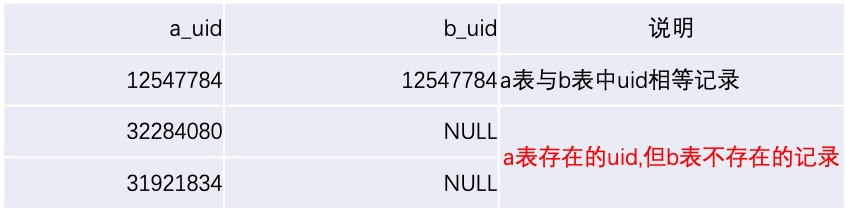
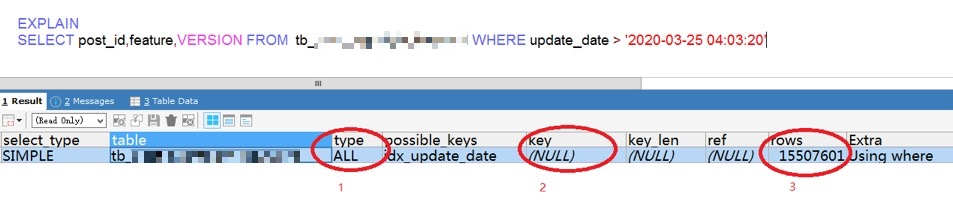
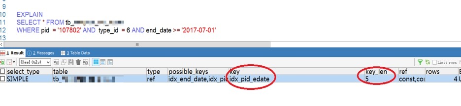

- 查询优化
- SQL查询执行顺序
- Where条件相关性能问题
- 子查询(in/exist)相关
- 分组排序相关
- 索引优化
- 事务
0x01 SQL查询执行顺序
| 执行顺序 | SQL关键字 | 执行内容 | 说明 |
|---|---|---|---|
| 8 | SELECT | 根据选择的字段,结果写入虚拟表T8 | |
| 9 | DISTINCT 字段 | 对SELECT的结果T8执行去重后, 写入虚拟表T9 | |
| 1 | FROM 左表 as a | 对FROM中的左表与右表执行笛卡尔积,生成虚拟表T1 | 每步操作结果都会生成一个虚拟表, 这里用T加执行顺序号来命名 |
| 3 | LEFT JOIN 右表 as b | 如指定了左外连接,会将左表中存在,但右表不存在的行,添加到T2表,生成虚拟表T3; 如果FROM中包含多个表, 则会将T3与下一表重复执行步骤1~3 | Join类型: Inner: 内联接, 等值连接 Outer: 外连接, 常用的Left join(以左表记录为基准), Right join(以右表记录为基准) |
| 2 | ON a.id = b.id | 对T1表应用on条件筛选, 符合条件的行写入虚拟表T2 | Inner jojn中on 与where条件效果相同; left join中on与where条件效果不同; |
| 4 | WHERE 条件 | 对T3表应用where条件过滤, 符合条件的记录写入T4表 | |
| 5 | GROUP BY 字段 | 根据group by中字段 , 对T4执行分组,生成虚拟表T5 | 注意:不在GROUP BY中的字段,如果出现在SELECT中,都要使用聚合类函数,不推荐下面的写法: Select a,b, sum(c) from t Group by a |
| 6 | WITH ROLLUP [CUBE] | 对T5结果,按不同维度执行统计,生成虚拟表T6 | GROUP BY ROLLUP(A,B,C) 结果 (A,B,C),(A,B), (A) GROUP BY CUBE(A,B,C)结果 (A,B,C),(A,B)(A,C),(B,C)(A),(B),(C) |
| 7 | HAVING 条件 | 对T6结果执行过滤,结果写入虚拟表T7 | |
| 10 | ORDER BY 字段 | 对DISTINCT后的结果T9, 执行排序后写入虚拟表T10 | 这部分可以使用字段别名, 字段运算或按字段顺序号执行排序操作 |
| 11 | LIMIT | 对T10取出指定行数据记录后,返回最终结果 |
0x02 数据类型隐式转换
如果where条件中的字段是varchar, 查询时传入的是int或int,varchar混用方式, 即使字段上有索引 ，仍然会执行全表扫描(特别要注意大表的查询或更新);
简单取巧的方式： 如果字段上有索引 ，但不确认字段是int或varchar, 可以全按字段串方式传入 ，这样不会有性能问题
SELECT
*
FROM
tb_example
WHERE
uid IN ( 17467432, 1617938, '15698321' );
正确写法：
SELECT
*
FROM
tb_example
WHERE
uid IN ( '17467432', '1617938', '15698321' );
注意: 当字段类型为int时, 传入数字, 加不加引号都能正常使用索引; 但是, 当传入字符数据时, 由于找不到对应的数值, 系统会将其转化为0来处理, 遇到表中0值较多时, 会出现全表扫描问题
SELECT
*
FROM
tb_example
WHERE
device_id = 'unknown'
ORDER BY
`id` DESC
等价于:
SELECT
*
FROM
`tb_example`
WHERE
device_id = 0
ORDER BY
`id` DESC
0x03 字段做函数类运算
由于语句对字段use_date做了日期转换，导致复合索引(xxx_status ,use_date)只能用到xxx_status , 无法利用use_date进行过滤
SELECT
COUNT( 1 ) AS cnt
FROM
tb_xxx
WHERE
xxx_status = 2 AND DATE_FORMAT( use_date, '%Y%m%d' ) = DATE_FORMAT( '2019-06-01', '%Y%m%d' )
正确写法：
取消对字段的函数转换， 将日期转为对应的时间段， 修改后查询用时在13毫秒(修改前用时在1.2秒+)
SELECT
COUNT( 1 ) AS cnt
FROM
tb_xxx
WHERE
xxx_status = 2 AND ( use_date >= '2019-06-01' AND use_date < '2019-06-02' )
0x04 字符集不同引发性能异常
tb_example 两表join时，会提示错误：Illegal mix of collations (utf8mb4_general_ci,IMPLICIT) AND (utf8mb4_unicode_ci,IMPLICIT) FOR operation '=', 所以开发同事添加了convert保持字符集一致， 但这样会导致全表数据的字符集转换问题
SELECT i.example_column
FROM
tb_example i
LEFT JOIN tb_example a ON i.example_column = CONVERT ( a.example_column USING utf8mb4 )
WHERE
i.create_time BETWEEN '2019-05-27 00:00:00'
AND '2019-05-27 23:59:59'
AND l.create_time < i.create_time AND a.create_time > i.create_time ORDER BY i.example_column DESC
优化方式:
(1)统一字符集比较规则
tb_example 表的数据比较规则修改为utf8mb4_general_ci（utf8mb4_general_ci性能要高于utf8mb4_unicode_ci)
ALTER TABLE tb_example CONVERT TO CHARSET utf8mb4 COLLATE utf8mb4_general_ci;
(2)表间关联字段添加索引
ALTER TABLE tb_example ADD INDEX (create_time);
ALTER TABLE tb_example ADD INDEX (example_column);
正确写法:
SELECT i.example_column
FROM
tb_example i
LEFT JOIN tb_example a ON i.example_column = a.example_column
WHERE
i.create_time BETWEEN '2019-05-27 00:00:00'
AND '2019-05-27 23:59:59' a.create_time > i.create_time ORDER BY i.example_column DESC
0x05 字符集补充说明
字符集按库->表->字段 ，从上到下的顺序继承， 即建库时指定了utf8mb4, 表与字段未指定字符集时，会继承库的字符集ut8mb4;
反过来则是覆盖关系 ，如果指定库字符集为utf8mb4, 多人同时开发时, 如果建表时有指定utf8, 那么表使用utf8字符集，如果在修改字段时指定为gbk,则此字段实际存储数据时按gbk存储，
这种情况会导致乱码产生或多表join时的性能问题，需要特别注意
0x06 or与union all
建议将or条件转换为union all，充分利用多个or条件上的索引以提高性能
select count(id) as num_count from tb_example where uid = 8212123 and (type = 1 or type = 2 or type = 3) and read_yn = 0
正确写法:
SELECT SUM(id) FROM (
SELECT COUNT(id) AS id FROM tb_example WHERE uid=8212123 AND read_yn=0 AND TYPE=1 UNION ALL
SELECT COUNT(id) FROM tb_example WHERE uid=8212123 AND read_yn=0 AND NAME=2 UNION ALL
SELECT COUNT(id) FROM tb_example WHERE uid=8212123 AND read_yn=0 AND TYPE=3) t
注意:
Union对结果集执行去重操作,而Union all不去重复, 所以后者性能较高,可以根据业务需要选择使用
0x07 NULL与DEFAULT使用
(1)建议表字段定义为NOT NULL, 尽量设置默认值(如int默认为0, varchar默认为’’，date默认为1000-01-01等), 将读写时的True, False, NULL三值判断变为True,False两值判断,方便代码中处理
注意: NOT NULL 与 DEFAULT要同时设置才能取消NULL值写入
例: 字段允许NULL时, 查询所有数据
select … from ... where username = 'a' or username != 'a' or username is null
字段NOT NULL时,查询所有数据
select … from ... where username = 'a' or username != 'a'
(2)select/update语句的where条件中使用 is null 判断null, 不能使用 =null, update中更新字段部分可以使用 set 字段= null
Update … set name = null where name is null ?
Select … from … where name is null ?
0x08 LEFT JOIN中ON与WHERE差异
(1)LEFT JOIN中ON不起过滤作用, 实际执行时会将两表join时的相等记录与
左表中存在但右表不存在的记录组合在一起
SELECT a.uid AS a_uid, b.uid AS b_uid FROM tb_example a
LEFT JOIN tb_example b ON a.uid = b.uid
AND a.uid = 12547784

(2)LEFT JOIN中WHERE才起到真正的过滤作用
INNER JOIN:内联接, 可简写为JOIN, 无论使用ON还是WHERE结果都一样
SELECT a.uid AS a_uid, b.uid AS b_uid FROMtb_example a
LEFT JOIN tb_example b ON a.uid = b.uid
WHERE a.uid = 12547784
0x09 in子查询列表值数量
当in子查询列表值数量>=1000时(不同版本会有差异), mysql会使用到临时表不降低性能, 注意控制传值数量,
SELECT * FROM tb_order_detailed
WHERE child_oid IN(1,2,3,4,5,6,7,8,9,10,11,12,13,14,15,16,17,18…)
0x0A not exists 与 not in
(1)当外部表A数据量明显大于子查询内部表B时使用in
SELECT A.name FROM A
WHERE NAME in(SELECT NAME FROM B)
(2)当外部表A数据量明显小于子查询内部表B时, 使用exists
SELECT A.name FROM A
WHERE EXISTS(SELECT NAME FROM B WHERE B.id = A.id)
当使用not in时注意,如果子查询的结果中包含null时, 实际返回结果为空, not exits没有这问题
例: 当业务上确认以下查询有结果返回时, 如果B表中name有一行null记录存在时, 实际会出现没记录返回的情况
SELECT * FROM A WHERE name NOT IN (SELECT NAME FROM B) # 无结果
SELECT * FROM A WHERE name NOT EXISTS(SELECT NAME FROM B WHERE A.id = B.id) # 正常返回结果
0x0B order by...limit分页
MySQL中的order by ...limit通常适用于查首页，最后页，数据量大时查中间页性能非常差 查前10条用时 0.001s SELECT * FROM tb_example ORDER BY id LIMIT 0,10 查10万条开始的前10条: 0.07s SELECT * FROM tb_example ORDER BY id LIMIT 100000,10
常见优化方式：
(1)借助主键
如果是批量拉取数据, 可以先通过条件获取对应的主键 , 通过主键字段关联来取中间页数据;前端页面上的分页优化方法较多, 主要原则也是避开随机查询中间页数据
SELECT a.* FROM tb_example a, (SELECT id FROM tb_example ORDER BY id LIMIT 10000,10) b WHERE a.id = b.id
(2) 使用分析函数生成序号 CTE
注意: 数量过千万的大表, 排序时会比较慢, 要限制并发执行次数
WITH tmp AS (
SELECT
ROW_NUMBER ( ) OVER ( ORDER BY post_id ) AS rn,
post_id
FROM
tb_post
WHERE
create_date <= '2019-08-15 00:00:00'
AND post_type = 5
) SELECT
a.post_id,
a.cover_img
FROM
tb_example a,
tmp b
WHERE
b.rn >= 6000
AND b.rn < 8000
AND a.post_id = b.post_id;
0x0C 排序索引选择
mysql是基于成本选择的执行计划, 以下语句中create_date字段有索引, 但执行计划认为排序成本较高, 所以会优先选择order by 中的id主键索引, 导致实际用时在10s以上
SELECT * FROM `tb_example `t` WHERE (create_date >= '2020-02-25 00:00:00')) AND create_date <= '2020-02-25 23:59:59') AND (STATUS = 1) ORDER BY id DESC LIMIT 100
优化写法:
通常情况日期随着自增id增长不断顺序写入, 可以将order by中的id更换为create_date , 充分利用时间索引, 可将耗时下降到10ms+
如果日期字段与自增id不是这种关系或业务上验证两者返回结果有差异时, 不能使用此方法
SELECT
*
FROM
`tb_example `t`
WHERE
( create_date >= '2020-02-25 00:00:00' AND create_date <= '2020-02-25 23:59:59' )
AND ( STATUS = 1 )
ORDER BY
create_date DESC
LIMIT 100
0x0D group by用法及误区
以下group by写法是msyql扩展语法, 新版本中默认启用full group by限制, 执行会报语法错误, 由于咱们这边早期没做这方面限制, 现在限制会影响很多业务, 强制不推荐使用
SELECT
relate_order_id,
COUNT( * ),
create_date,
SUM( price_deposit )
FROM
`tb_example WHERE create_date >'2020-02-01' GROUP BY relate_order_id
正确写法:
不在GROUP BY中的字段 , 在SELECT中都要使用聚合类函数, 如SUM,MAX,COUNT....等等, 按上面的写法, 不同relate_order_id分组取出来的create_date,对应的只是其中的第一条件记录对应的日期 , 在汇总统计运算中,大多没有实际参考意义
SELECT relate_order_id,COUNT(*), MAX(create_date),SUM(price_deposit) FROM `tb_example WHERE create_date >'2020-02-01' GROUP BY relate_order_id
补充说明:
mysql中group by默认会执行排序操作, 如果不是必须, 可以添加 order by null取消在数据库端排序, 减少数据库中的运算, 取到结果后在应用中再做排序
0x0E 组合索引
SELECT COUNT(*) AS cnt FROM tb_example WHERE update_date >= '2020-01-19' AND last_city_id =19 AND es_update=0
针对上面sql, 新建索引参考: where条件中last_city_id数据的唯一性高于 es_update, 而update_date是范围条件, 按先等值, 再范围条件的顺序建立, 如果都是等值条件, 唯一性高的字段在前, 添加组合索引如下:
ALTER TABLE tb_example ADD INDEX idx_last_city_id (last_city_id, es_update, update_date)
说明: 索引是最左前缀匹配, 除了上面sql, 以下语句也能用上新建索引, 语句中where条件不包含last_city_id字段, 都无法使用此索引
SELECT COUNT(*) AS cnt FROM tb_example WHERE last_city_id =19 AND es_update=0
SELECT COUNT(*) AS cnt FROM tb_example WHERE last_city_id =19 AND update_date >= '2020-01-19'
SELECT COUNT(*) AS cnt FROM tb_example WHERE last_city_id =19
0x0F 强制索引
force index:
当mysql默认的执行计划选择错误时, 可以通过force index指定过滤性更好的索引提升性能
缺点: 当索引名称修改时, 应用代码中也要同步修改;
当数据大量删除或跟之前相比有明显变化时, 如果mysql默认执行计划选择正确 , 那么强制索引也要跟着变化或取消
SELECT
count( 1 ) AS total
FROM
`tb_example FORCE INDEX ( idx_uid_date )
WHERE
uid = 1785334
AND inverse_date >- 1579366800
AND inverse_date <- 1579363200
0x10 Explain性能分析简介

- Type
当type出现ALL时, 表示实际执行时会有全表扫描问题, 需要尽力避免 - Key
表示语句实际用到的索引, 索引效率差时,可以新增或强制索引 - Rows
表示获取结果前需要过滤的行数, 越小越好 - key_len
实际使用索引的字节长度, 通过这个值,可以了解多列组合索引中各字段是否完全使用
0x11 判断组合索引使用的字段
例: 表tb_example 有索引idx_pid_edate(pid, type_id, status, end_date)
索引中各字段数据类型:
pid INT 4
type_id TINYINT 1
status TINYINT 1
end_date DATE 3
说明: where条件有3个字段, 执行计划显示用到了idx_pid_edate 索引, 但key_len显示为5, 表示实际执行时, 只用到了索引中的前两列 pid, type_id (4+1=5bytes); 如果索引中有varchar型字段, key_len要相应增加1-2bytes, 如果允许为NULL, 增加1bytes

0x12 mysq中实现事务的常见方式
方法1:start transaction; sql语句...;commit;说明: 在sql脚本,存储过程, 客户端工具,应用代码中都能通用, 推荐使用
方法2:begin; sql语句...;commit;限制: 关键字包含begin, 在存储过程中不能使用
方法3:set autocommit = 0; sql语句...;commit;说明: 借助mysql变量实现事务 , 通常应用框架中会使用aucommit来控制提交或回滚, 使用这种方式, 每执行一条语句就表示隐含开了个事务, 在读写语句执行完后,都要加commit, 另外, 通过日志排查问题不是很方便
0x13 select ... for update使用误区
部分开发同事认为select ... for update语句默认会启用事务加锁,真实情况是, 除非显示地启用事务, 否则这个语句与普通select语句执行没有差异, 无法实现加锁功能;
例:以下事务中的 for update语句, 实现对id=1的记录加意向更新锁, 在事务提交前, 其他会话会无法更新这条记录
start transaction;
select ... from tb where id = 1 for update;
update....commit;
0x14 使用事务注意事项
(1)代码中同一会话多次启用事务
If条件处理逻辑,导致并发执行时,执行到这部分就return退出,并未执行到后面的commit语句,这种情况会出现一个长时间不提交的大事务,日志中会出现很多不同用户的访问全在同一线程中,
由于事务长时间不提交也未回滚, 当有并发更新时, 会出现大量锁等待超时报错现象
(2)MySQL中同一会话中多次启用事务
start transaction;
update tb_example set total_amount = 1000 where id = 1;
再次启用事务时, 会将前面未提交的事务执行自动提交
start transaction;
insert into tb_example (uid, ukey, uvalue) VALUES(1, 5,203);
commit;
事务简单总结:
1.代码中避免
确保事务短小,代码中做好各类异常判断处理, 及时提交或回滚语句,避免并发时,事务加锁时间过长影响业务正常运行
2.proxy层限制
通过max_transaction_time(可动态设置),强制中止超时的事务执行
3.数据库限制
通过innodb_rollback_on_timeout参数(重启实例生效),在实例级回滚所有未提交的异常事务, 适用于代码中事务问题少,回滚影响面较小时启用
一些注意的点
是否遵守上面规则根据项目实际情况进行选择